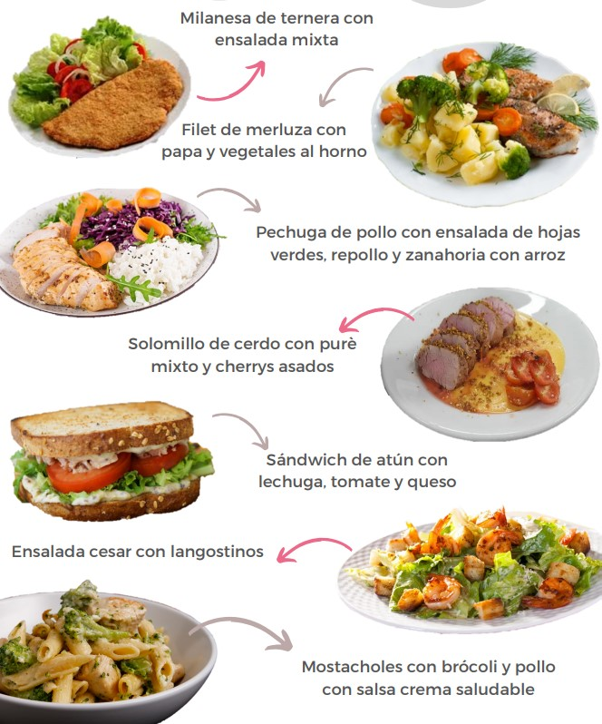
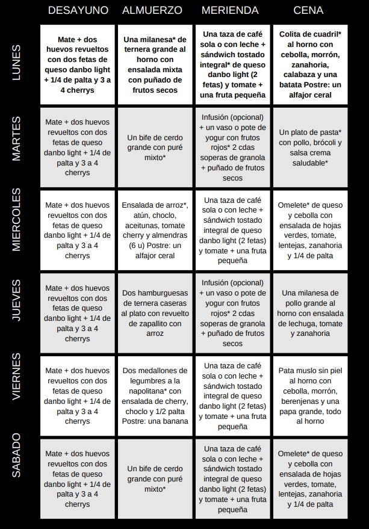

EJEMPLOS

EJEMPLO ORGANIZACION DE LA SEMANA

PONER EL FOCO EN: REDUCIR EL CONSUMO DIARIO DE ALCOHOL, INTENTAR
DE SER POSIBLE DEJARLO PARA REUNIONES O EVENTOS Y EMPEZAR A
DISMINUIR EL CONSUMO DIARIO EN CASA.
DOMINGO DIA LIBRE PERO NO EXCEDERSE
ACLARACIONES
*Milanesa: idealmente, caseras. No utilizar aceite en la placa,
rociar con fritolin de ambos lados cada milanesa. Puede rebozarlas
con pan rallado, con avena, con polenta, con semillas, etc.
*Pan integral: utilizar marca VALMAIRA (se consigue en dietética),
en caso de no conseguir, utilizar cualquier pan integral de
almacén o supermercado (tipo fargo doble salvado, lactal paquete
verde, etc).
*Colita de cuadril: puede utilizar cualquier otro corte magro, una
vez cocida la carne pesar la porción establecida que son 150 g (en
cocido)
*Cena lunes: realizar una porción extra de batatas y calabazas,
para dejar adelantado parte de la guarnición del almuerzo del día
siguiente.
*Puré de mixto: no agregar materia grasa, preferentemente agregar
una cda de queso untable. Condimentos a gusto sal, pimienta, nuez
moscada, etc.
*Frutos rojos: se pueden utilizar los congelados, recordar
sacarlos del freezer la la mañana y dejarlos en un bowl en la
heladera para utilizarlos luego.
*Pasta: utilizar pasta corta o larga seca, en crudo son 100 g, una
pechuga de pollo de 120 g y brócoli que puede ser congelado.
Procedimiento: En una sartén o wok colocar 1 cda de aceite saltear
el pollo cortado en tiras o cubos, una vez que el pollo está
agregar unos arbolitos de brócoli (previamente colocarlos en el
microondas para eliminar el agua), y agregar una taza de leche +
media pote chico de crema light (100 cc), condimentar a gusto con
sal, pimienta, etc. paralelamente a la preparación de la sartén o
wok, tener en una ollita el agua con sal hirviendo para agregar la
pasta, una vez que la pasta está lista agregar a la sartén o wok
donde estaba la otra preparación, mezclar todo, volver a
condimentar si hiciera falta, servir en un plata y agregar
opcional 1 cda de queso rayado si quisiera.
*Arroz: la cantidad para preparar una sola porción es la
equivalente a colocar crudo 50 g de arroz, si quisiera hacer mucha
cantidad para reservarla como guarnición para otras comidas,
entonces hará más cantidad y cuando esté cocido el arroz en el
plato deberá pesar 150 g.
*Atún: utilizar al menos 1 lata, puede ser al agua o en aceite (en
este último caso, escurrir lo mejor posible)
*Choclo: puede utilizar los granos congelados sin problemas, en
ese caso los pone al microondas un minuto y luego los agrega a la
ensalada.
*Aceitunas: preferentemente comprar aceitunas sin carozo cortadas
en rodajas y agregar 1 cda sopera bien colmada (sin la salmuera)
*Omelete: utilizar 2 huevos y 2 claras. utilizar queso port salut
light (60 g en unidad casera sería aproximadamente 3 lonjas
medianas), el relleno puede ser de queso y cebolla, queso y
arvejas, queso y atún, queso y brócoli, queso y tomate, queso y
espinaca, etc.
*Almuerzo miércoles: dejar hecho una porción extra de arroz para
reservarla para el almuerzo del día siguiente. Solamente realizará
las hamburguesas a la plancha y mientras se cocinan, salteará un
zapallito y luego le agregará el arroz que ya está previamente
listo. Opcional puede agregar una cda de queso rayado
*Medallones a la napolitana: agregarle 15 g de queso port salut
light a cada medallón y opcional una rodaja de tomate
*Whey protein (opcional): utilizará un batido de 1 scoop (con agua
o leche, lo que prefiera) los días de entrenamiento, idealmente
post entrenamiento, no hace falta que sea INMEDIATAMENTE, ejemplo:
entrenó a las 16 hs, entonces en la merienda se suma el batido.
**Las frutas que están puestas en el mosaico pueden ser
sustituidas por cualquiera de su preferencia, en caso de no querer
comerla en el momento que está indicado, puede reservarla como
colación o snack.
**Si en las ensaladas figura algún vegetal que no tiene o por el
contrario quiere agregar alguna verdura que no figura puede
hacerlo sin ningún problema
**De postre siempre podrá utilizar si lo desea gelatina sin azúcar
sola o con frutas.